[CMU15445]:Join算法
joins
一个好的数据库设计的目标是尽量减少信息的重复，因此，需要连接来重构原始表。
本课程将介绍用于合并两个表的内部等值连接(inner equal-join)算法, 等值连接可以被修改以支持其他种类的连接，并且
等值连接也是实战中使用的最多的连接方式
等值连接使用记号
表示
操作的输出
假设有两个表R, S, 它们其中的tuple分别为r, s, 那么join操作在逻辑上的结果就是将两个表中某个属性上相同的tuple r, s组合起来，形成一个新的tuple
事实上，实际的join操作的输出结果根据数据库存储模型、查询计划的不同也有所不同，主要的输出结果有Data和Record Id两种
Data
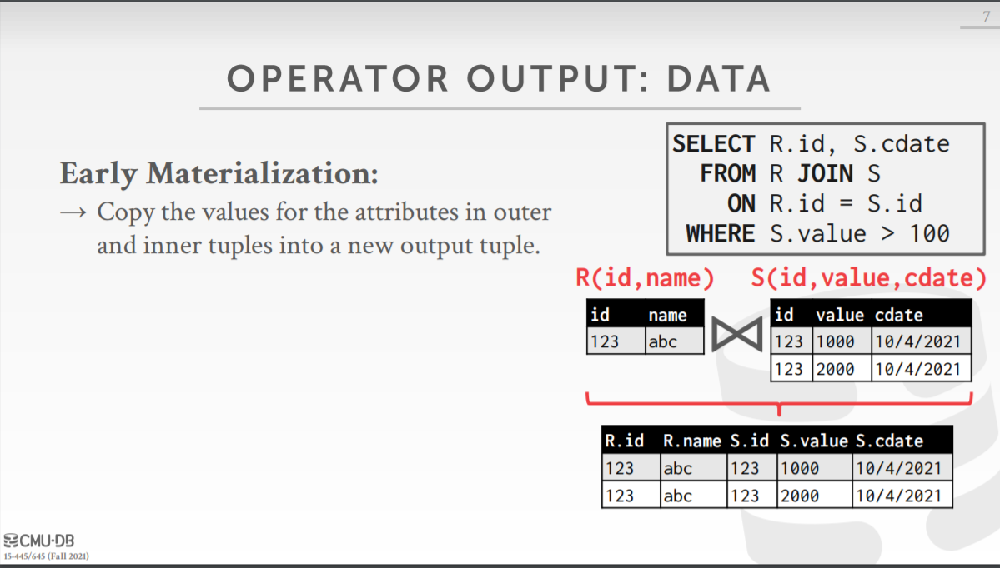
该方式中，join操作的结果返回的就是将两个表中的的tuple组合在一起，形成一个新的更长的tuple作为中间结果,该方法被称为early materialization
优点
在查询的后续操作中，就不需要回头继续取数据了，因为数据已经全部拿过来了
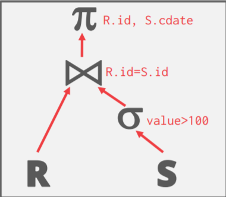
在该查询树中，如果输出结果为Data那么就不需要回头，从叶子节点可以一直走到根节点处
缺点
该方法缺点页十分明显，就是在查询过程中取出了很多的无用数据，比较占用内存空间
Record Id
该方法中，只拷贝那些
join操作需要的key以及匹配tuple的record Id,join操作形成的结果如下所示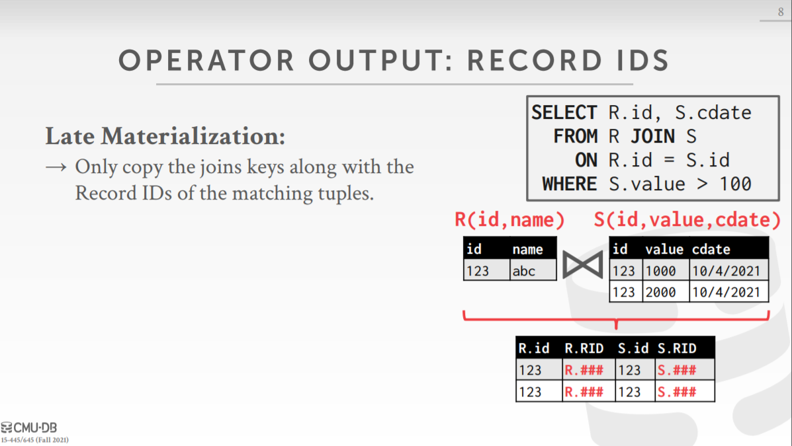
之所以需要存储RID是因为在后续操作中如果查询计划需要别的属性就可以通过它们来找到相应tuple的位置，该方法被称为late materialization
优点
该方法对于列存储来说十分理想，因为如果join操作输出结果为data,那么列存储就需要访问很多page来获取那些可能不需要的属性，而在该方法中，只需要访问4列即可，很显然能够节省开销
Cost Analysis
在这里，当评判一个join算法的优劣时，只考虑他们在进行joins时所需的磁盘I/O次数，不需要考虑计算输出结果的的开销，这是由于在不同算法中计算输出结果的开销与算法本身无关
接下来会使用到的变量
• M:外表R中的page数目, m:外表R中的tuple总数
• N:内标S中的page数目，n:内标S中的tuple总数
Nested Loop Join
该方法是最慢的方法，即嵌套循环
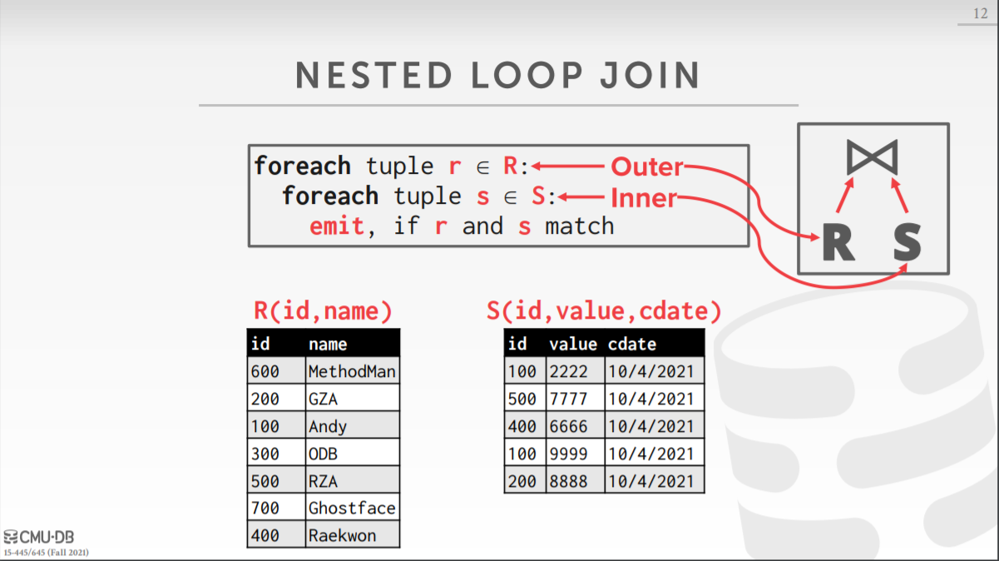
复杂度分析
对于外表R中的每一个tuple, DBMS都需要扫描一遍内表S，即取出其所有的page, 将整个表的tuple与R的tuple进行比对
故对内表S来说，需要的I/O次数为
m * N而遍历一遍外表R也需要取出其所有的page, 故总I/O次数为:
M + m * N
例子
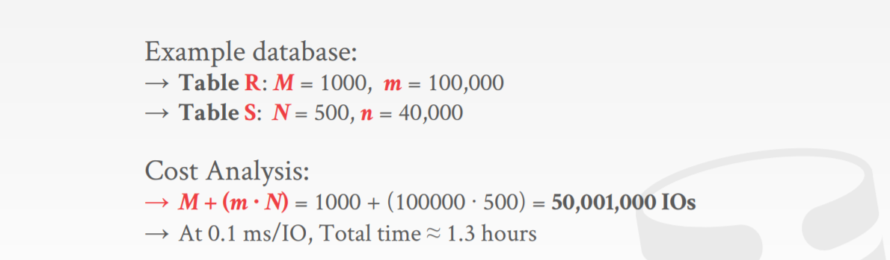
如果将tuple量更小的表S作为内表，能够稍微减少一点join所需要的时间
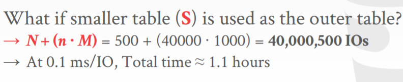
Block Nested Loop Join
该算法是对Nested Loop Join算法的改进, 其基本思想是:对于外表R中的每个page, 依次取出内表S中的Page, 两个Page之间再进行join操作
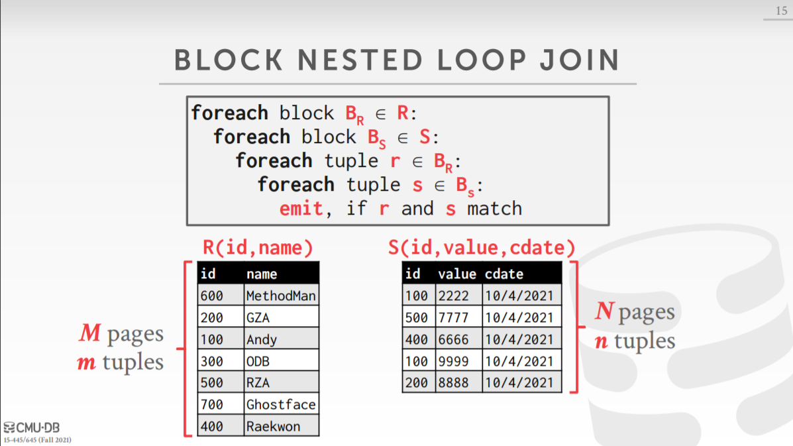
复杂度分析
外表R的每个Page都需要和内表S的所有Page进行配对，需要
M * N*次I/O取出外表R的所有Page,需要M次I/O, 故最终的I/O次数为:
M + M * N
例子
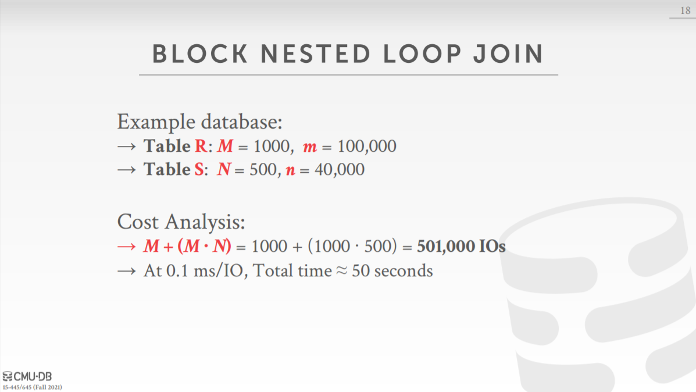
可以看到时间由一个小时缩短到了50s, 但还是很慢
在此基础之上，如果能够充分利用内存，假设内存能够容纳的下B个Page, 最好情况下，使用B-2个作为外表R的buffer page, 使用1个作为内表S的buffer page, 使用一个作为输出buffer page, 那么，时间复杂度可以重新计算为；
M + ($lceil M / (B- 2) rceil$ * N)
最好情况下的例子
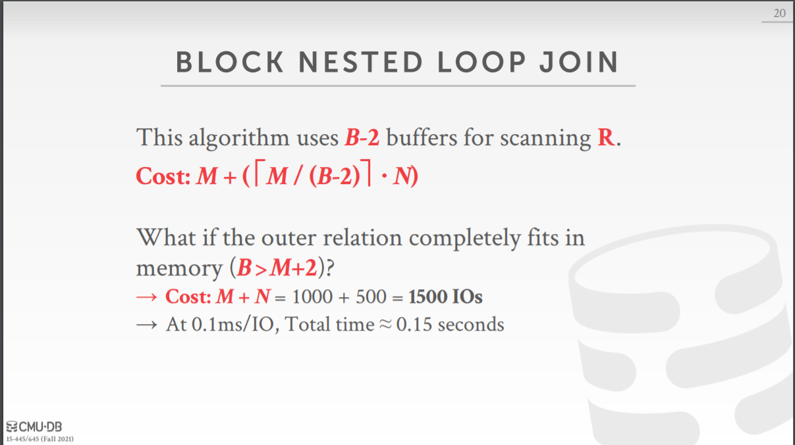
同样的数据量，现在被缩短为了0.15秒
Indexed Nested Loop Join
之前的几种join算法表现都不是很好，是因为他们他们都采用了扫描的方式，如果DBMS在跟定的属性上已经建立了索引，那么就可以使用索引来进行查找，这样可以节约很大的开销
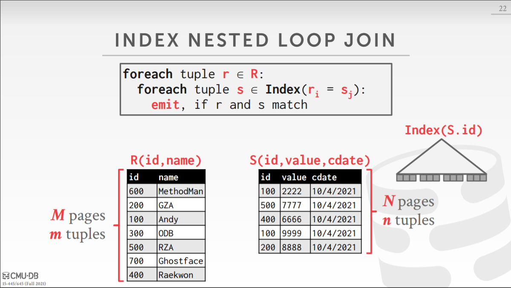
在该算法中，DBMS可以利用已有的索引或者临时建立一个索引用于给内表进行查找，每次内表进行查找的时间就可以缩短为常数时间C,
如果是Hash Index的话最好情况时O(1), 最坏情况时O(n), 如果B+树的话就是O(lg(n)), 这里的n的索引中数据的规模
复杂度计算
使用了索引之后，需要进行的I/O次数为
**M + (m * C) **
Nested Loop Join总结
- 永远使用较小的表作为外表
- 设置尽可能多的buffer page
- 内表最好使用索引，否则就只能按序扫描
Sort-Merge join
该算法的基本思想是对两个表的指定key进行排序，排序算法可以使用之前的外归并排序，然后使用两个游标分别对两个表进行扫描
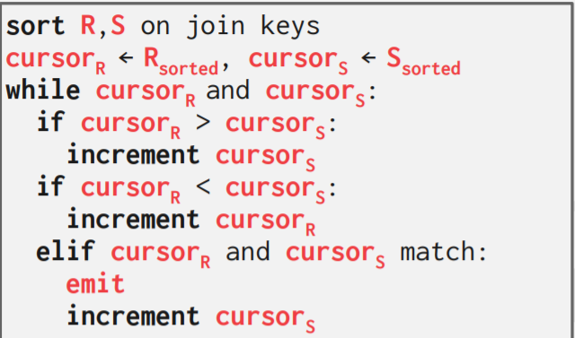
上面的算法只是简写，在扫描过程中有可能会发生回溯现象，下面这张图是教材中的算法描述
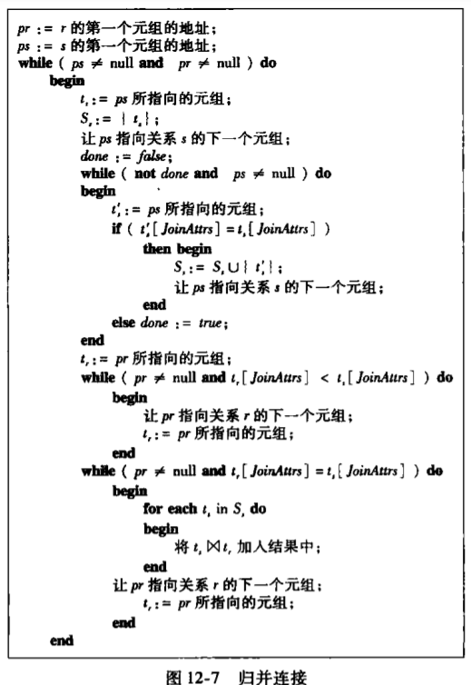
例子
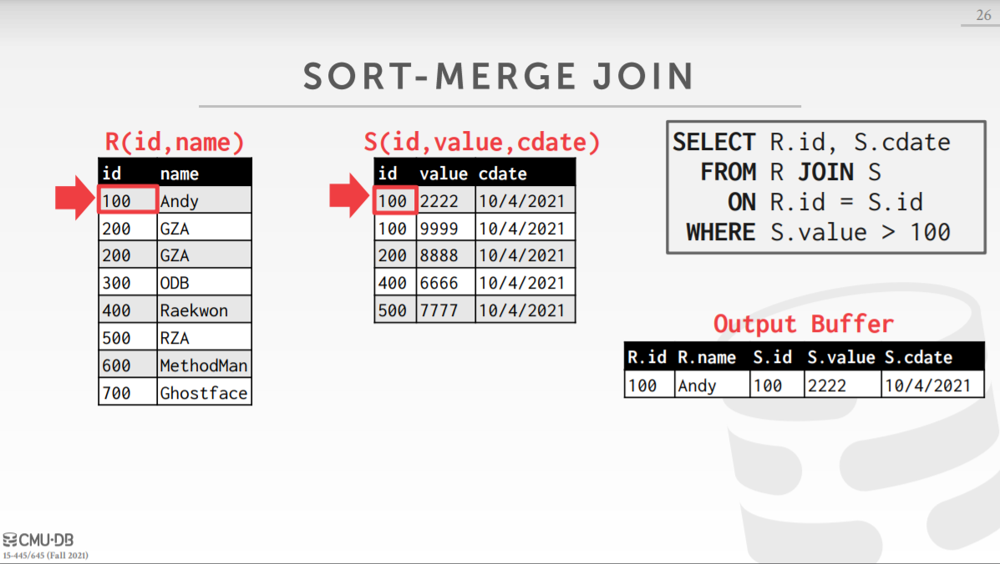
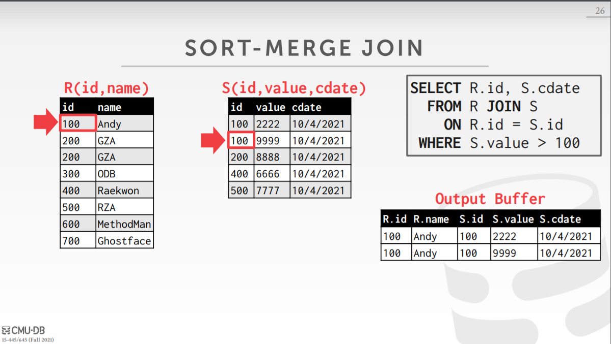
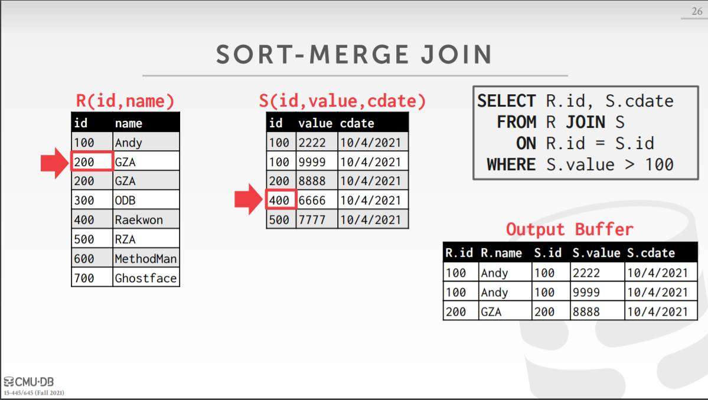
下面发生了回溯
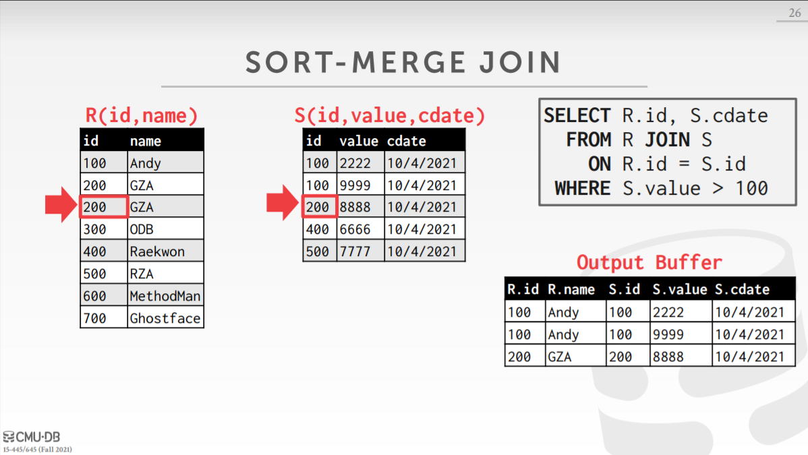
复杂度分析
最坏情况下，即两张表中所有的key完全相同，那么每次内表都得从头回溯，比较次数为
M * N最好情况下，一次回溯都没有，那么比较次数为
M + N下面给出排序加上merge操作的总复杂度
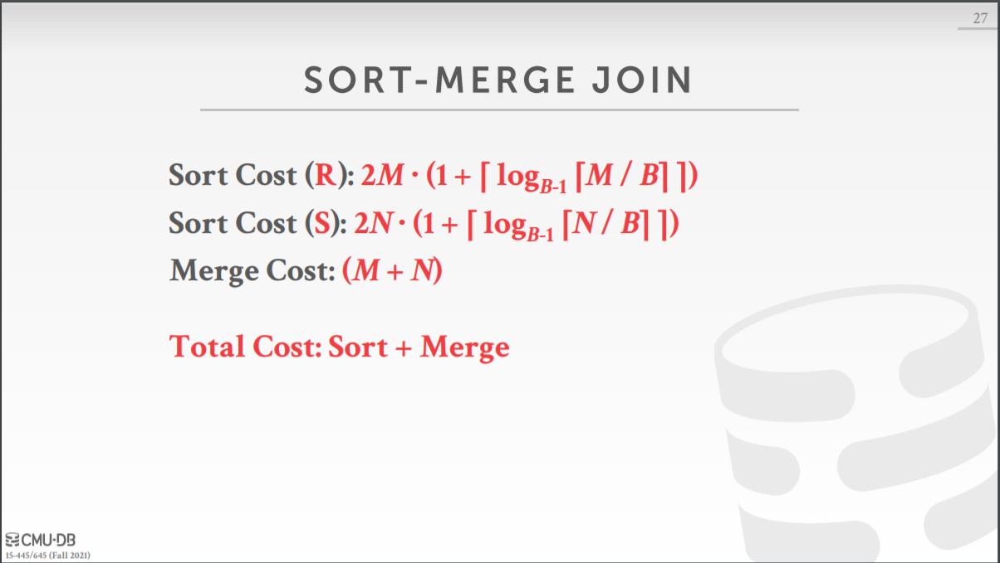
例子
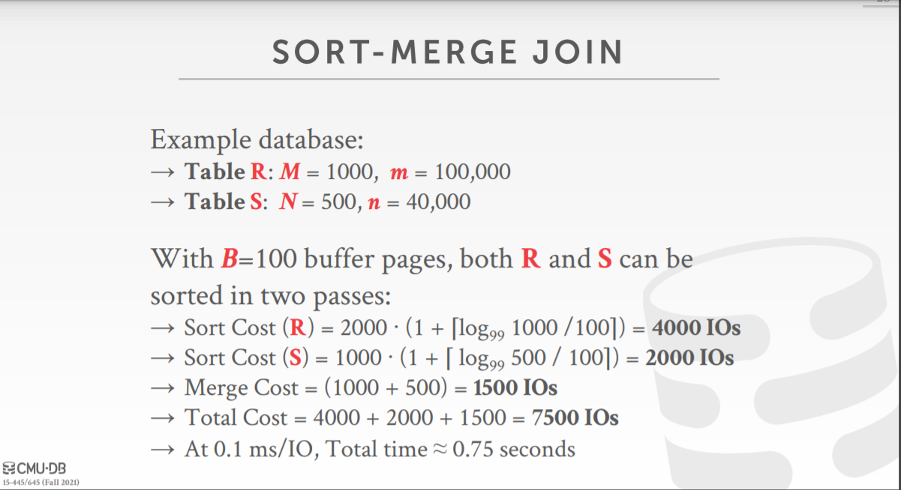
Hash join
Hash join是最快的方法，它的基本思想是通过join上的key的哈希函数的值，将一个表分成多个块存储在不同的bucket当中，另一张表也通过相同的哈希函数，对表中的每一行进行映射，每映射到一个桶，就在该桶中进行匹配，如果发现了相同的key,那么就可以输出
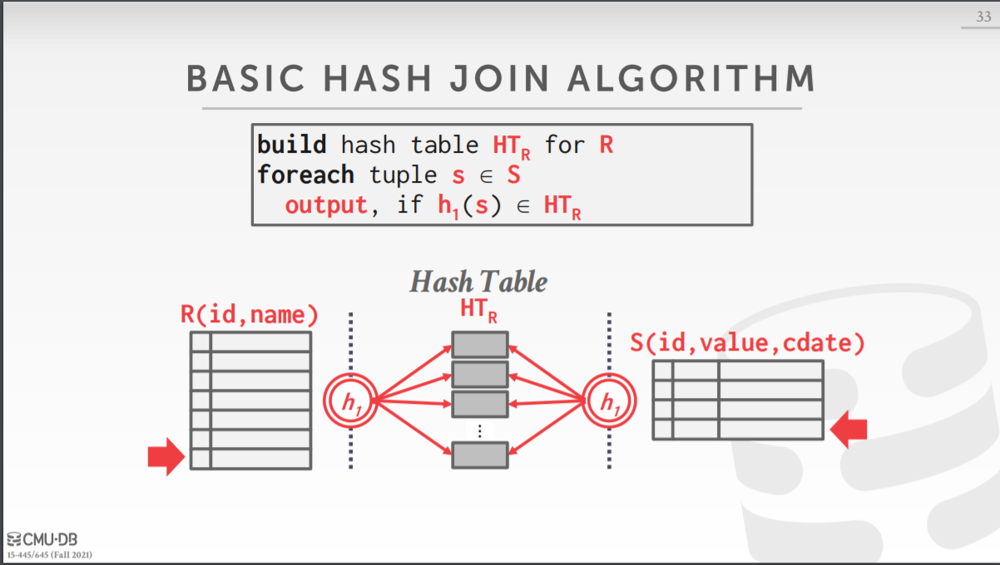
该方法思想十分简单，并且速度也十分快
具体来说可以分为两个阶段：
Phase #1 build
扫描外表R，将join所需的attribute作为哈希函数的输入进行映射，哈希表的value则依赖与具体实现
Phase #2 Probe
对内表S中的每个条目，使用相同的哈希函数进行映射，映射到某个bucket 之后，将其attribute与该bucket的所有条目进行比对，如果key相同则输出
如果DBMS已知外表的大小，那么就可以使用静态哈希表，如果外表大小未知的话，那么可以采用动态哈希表或者使用overflow pages
有些实现还使用了布隆过滤器作为辅助，用于在Phase #2中快速进行判断attribute是否在bucket中
下面是一个关于布隆过滤器的连接
https://zhuanlan.zhihu.com/p/43263751
Grace Hash join
Grace Hash join是基本hash join的拓展，其不仅将外表属性映射到哈希表中，同时还将内表映射到哈希表中
该方法适用于hash join方法下bucket不能够全部放入内存的情况
同样，Grace Hash join也分为两个阶段:
Phase #1 Build
DBMS会扫描两个表，使用相同的哈希函数填充哈希表
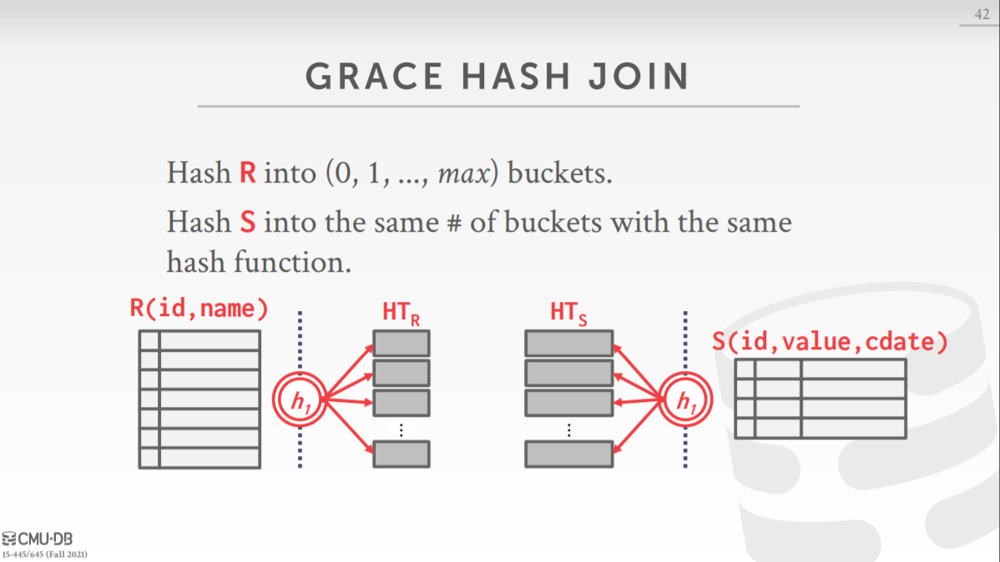
由于可能会发生哈希碰撞，所以可能会产生overflow pages, 当overflow pages到达一定阙值时，可以采用recursive partitioning的策略，即将这些overflow pages进行重新分区，采用不同的哈希函数进行映射
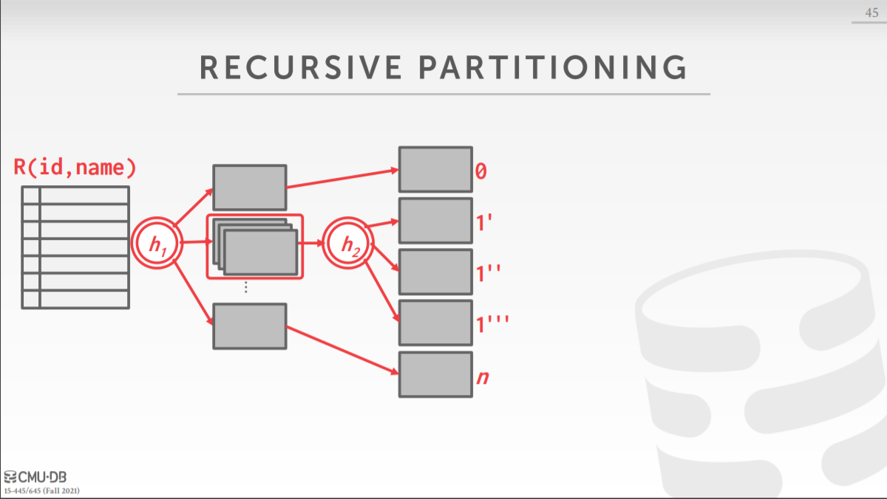
原本多个overflow pages可以减少为较少的分区，这样就可以递归的执行直到所有的bucket都能够被放进内存
Phase #2 Probe
对于同一层级的bucket, 对它们使用nested Loop join, 进而找出所有匹配的tuple, 由于所有的bucket 都在内存当中,所以nested Loop Join也十分快速
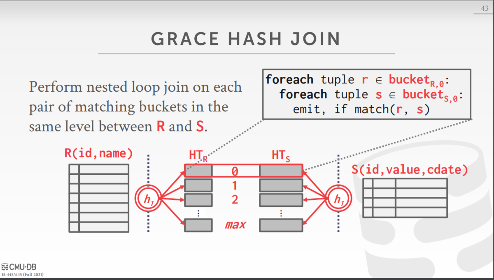
复杂度分析
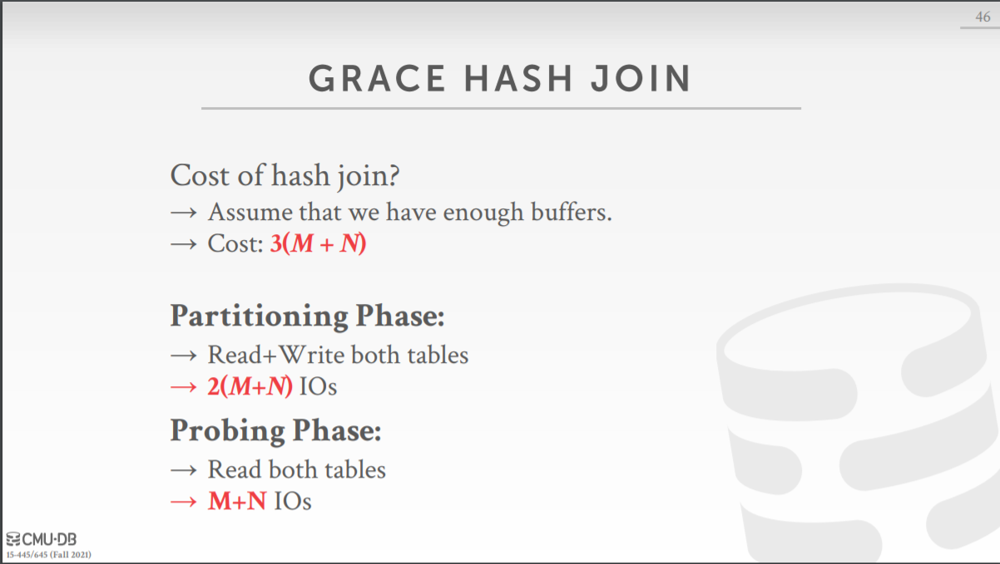
Summary
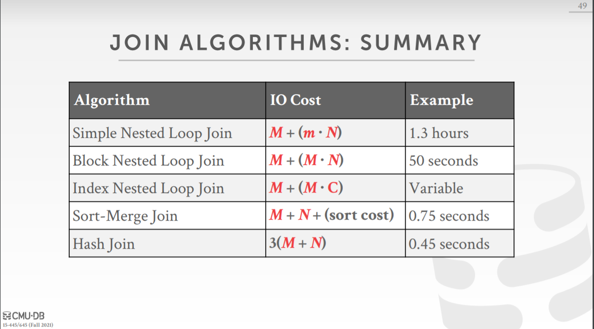
总结
Hash Join 在绝大多数场景下是最优选择，但当查询包含 ORDER BY 或者数据极其不均匀的情况下，Sort-Merge Join 会是更好的选择，DBMSs 在执行查询时，可能使用其中的一种到两种方法
本博客所有文章除特别声明外，均采用 CC BY-SA 4.0 协议 ，转载请注明出处！